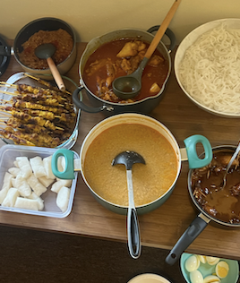
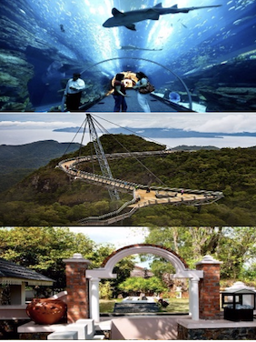

Explore Malaysia:
Your Ultimate Resource for Culture, Landscapes, and Cities
Embark on a new journey through Malaysia!

Welcome fellow explorers and travellers!
Malaysia, a vibrant and diverse country located in Southeast Asia. Known for its rich cultural heritage, incredible landscapes and bustling cities. Not many people know much about Malaysia, and that is why I’m glad you are here right now! Be prepared to embark on a new journey through Malaysia, where tradition meets modernity and a place where it’s overflowing with natural beauty.
This site is just the right place for you to learn and discover Malaysia. Whether you’re planning a future visit, exploring new places, simply curious about its natural beauty or even a place to spend the rest of your retirement at, this site is your comprehensive resource for all things Malaysia. As a Malaysian my self, I designed this website to provide you with information, photographs and insider tips to enhance your exploration of my home country, Malaysia!
Highlights of the Month
Must try food

Renowned for its diverse and flavorful cuisine, influenced by Malay, Chinese, and Indian culinary traditions. Here are some must-try dishes when visiting Malaysia
Current Celebrations
Hari Raya Aidilfitri - a significant celebration for the Muslim community in Malaysia marking the end of the holy month of Ramadan. A time of joy, gratitude, and forgiveness, as well as a time for family and community gatherings
Popular Destinations
Langkawi, the Jewel of Kedah, a duty-free island and an archipelago of 99 islands, known for its picturesque beaches, lush landscapes, and diverse attractions.